Our work
Service projects designed and run by our members.
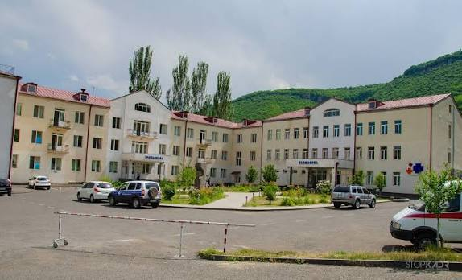
A Rotary Global Grant funding critical medical equipment — including ER patient monitors, an ultrasound machine, a ventilator, and a gastro-colonoscopy system — for Goris Hospital, the primary healthcare provider for roughly 250,000 people across Syunik province.
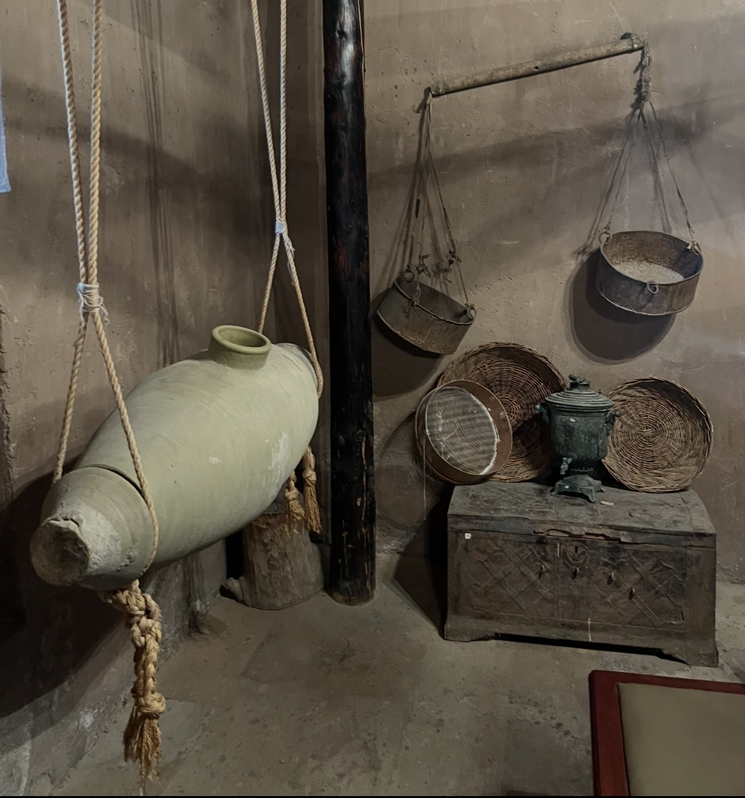
A heritage preservation initiative documenting endangered Armenian oral traditions, crafts, and folklore. Starting with a pilot in Ashtarak, the project combines fieldwork with academic research to build a digital archive for the youth and the Diaspora.
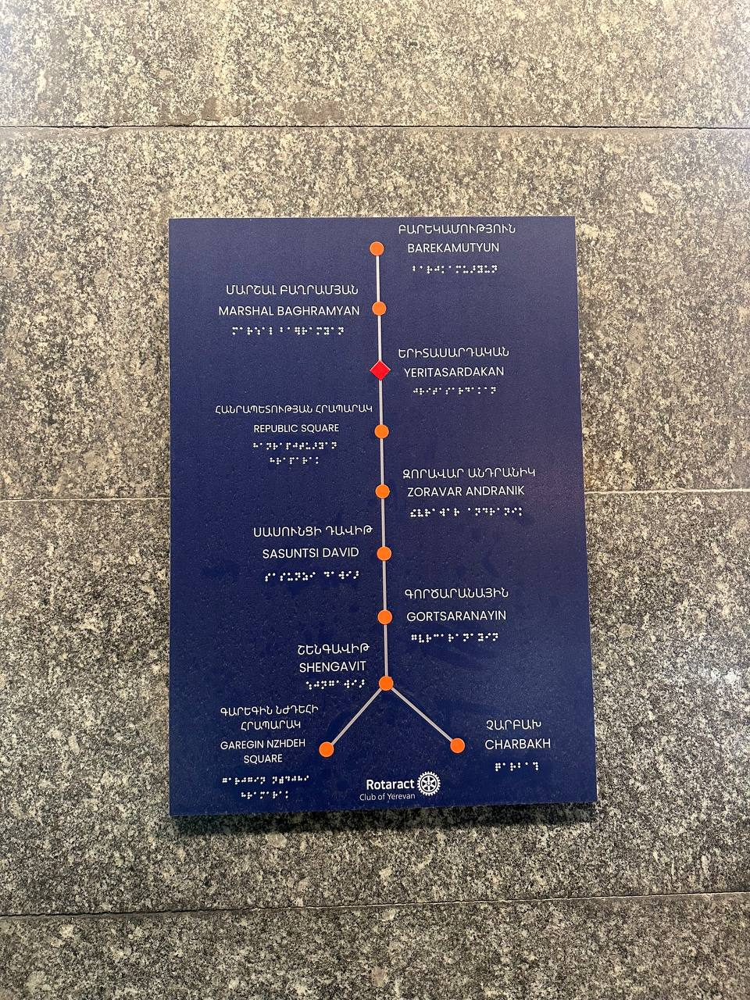
Making Yerevan's transport system more accessible for vision-impaired individuals, starting with the metro — installing braille signage and tactile floor guides, with the first braille sign already in place at Yeritasardakan station.
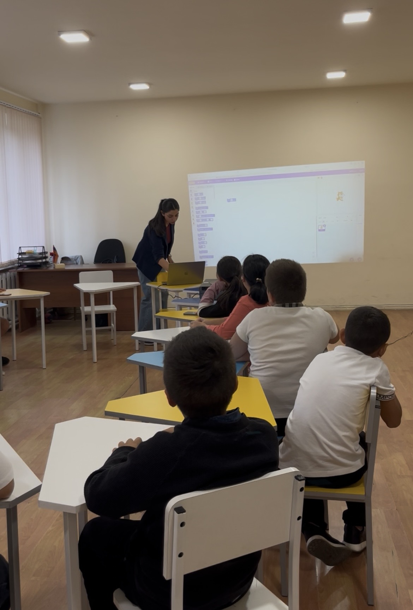
A vocational orientation and mentorship series for children in social care centers. Through four interactive visits to the Ajapnyak Social Care Center, we used storytelling and educational games to broaden their view of future career paths.
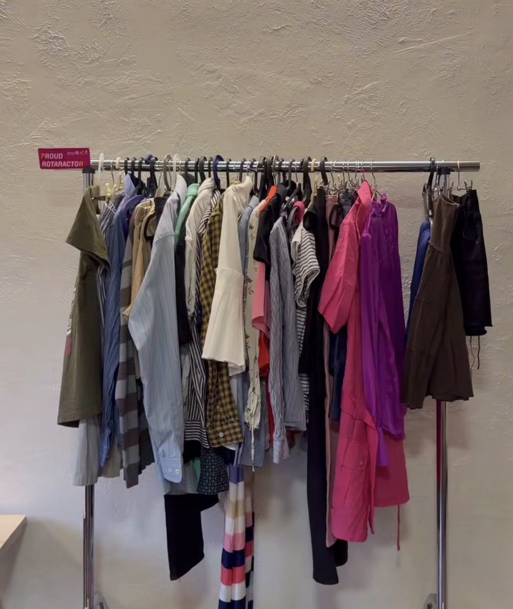
A clothing-swap event where participants exchanged old clothes for new ones brought by others — giving life to neglected garments and raising awareness around clothing waste.
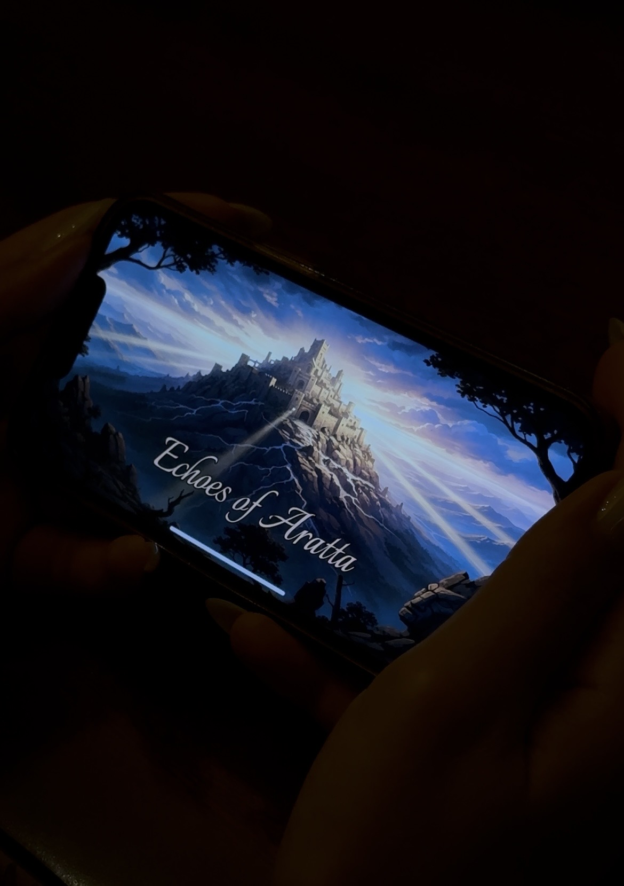
A high-fidelity, turn-based historical strategy iOS app bridging the generational gap in Armenian historical knowledge. Roleplaying as iconic rulers across eras, users explore a "living encyclopedia" that turns 2,800 years of history into an interactive experience.
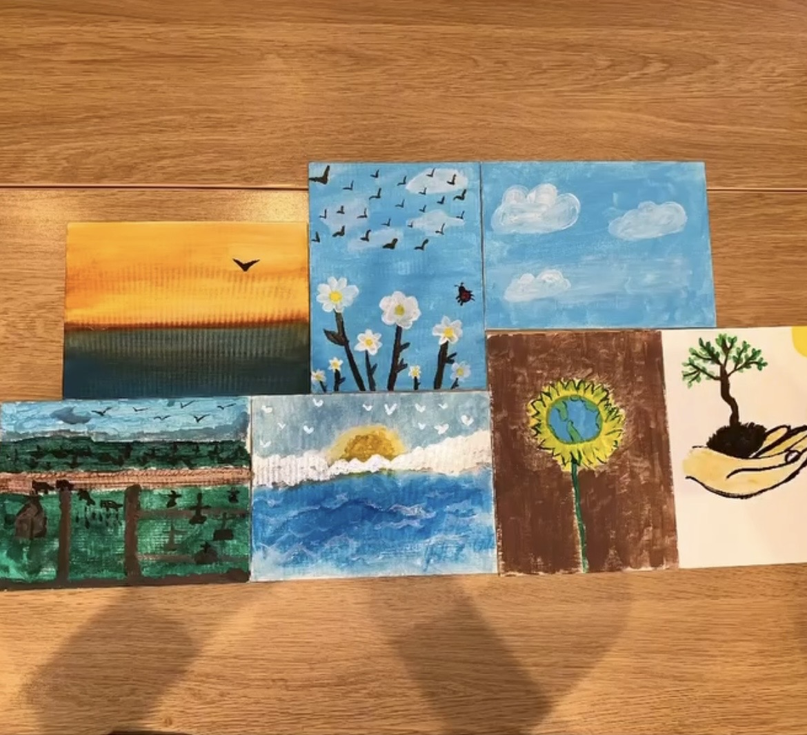
Joined a global initiative, gathering together to paint what peace means to us.
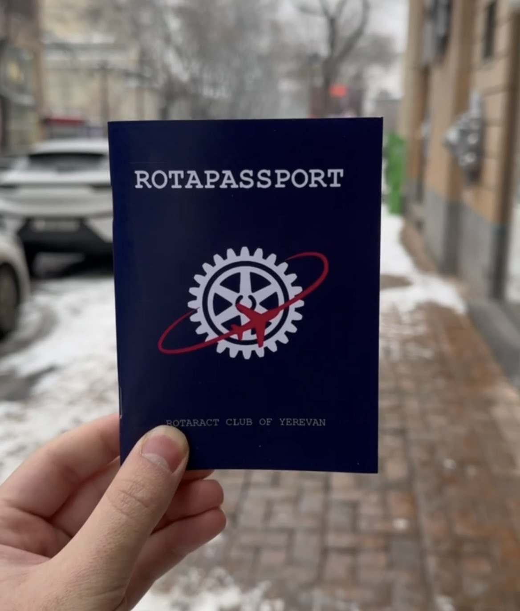
A unique passport where each page represents a Rotary zone — members collect stamps from different clubs as they connect across the district.
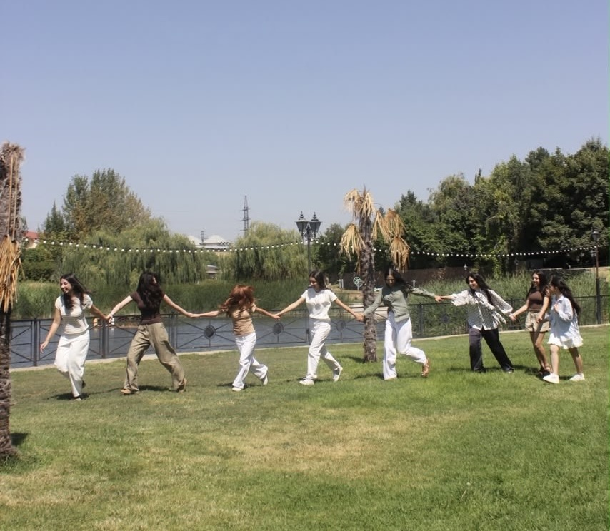
Each week the club picked a personal discipline — like drinking more water or reading more — for every member to practice before reporting back at the next meeting, thus building small habits of self-discipline together as a group.
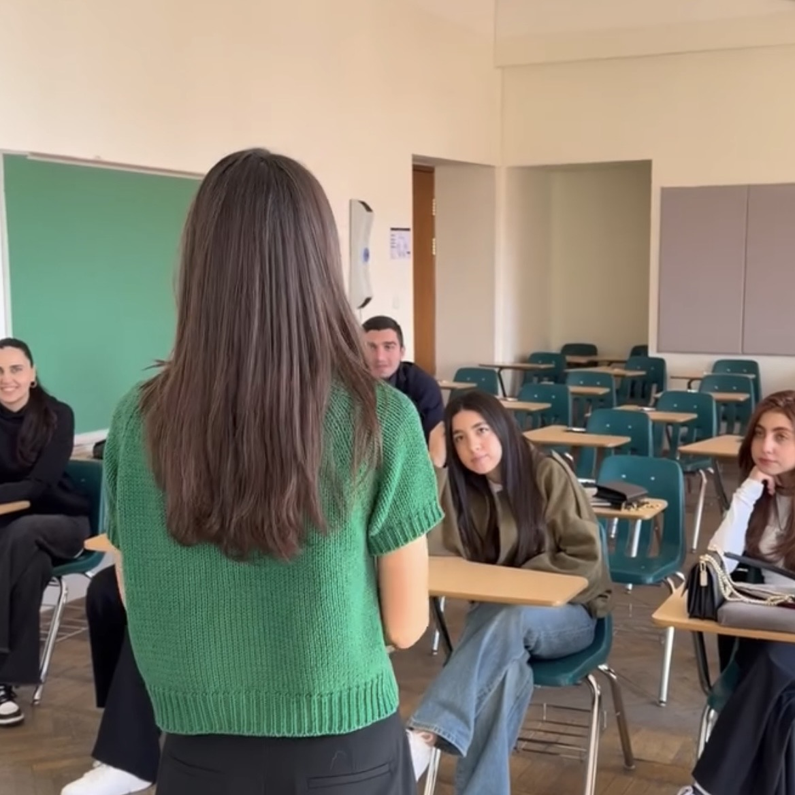
Members complete courses on the Rotary online learning platform, then lead sessions sharing what they've learned with the rest of the club.
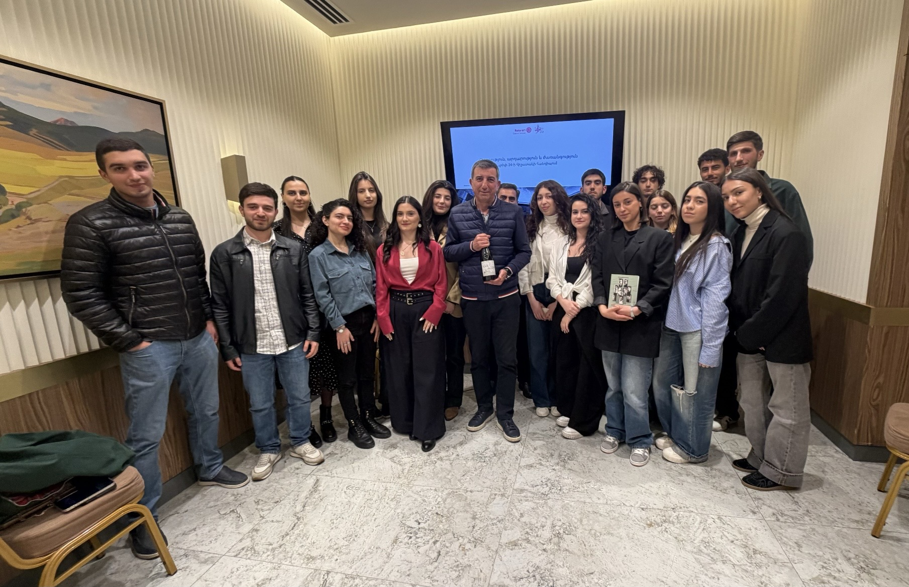
Around April 24th, Genocide Remembrance Day, the club met with the grandchild of one of Operation Nemesis's members, turning a solemn commemoration into a living connection to history.
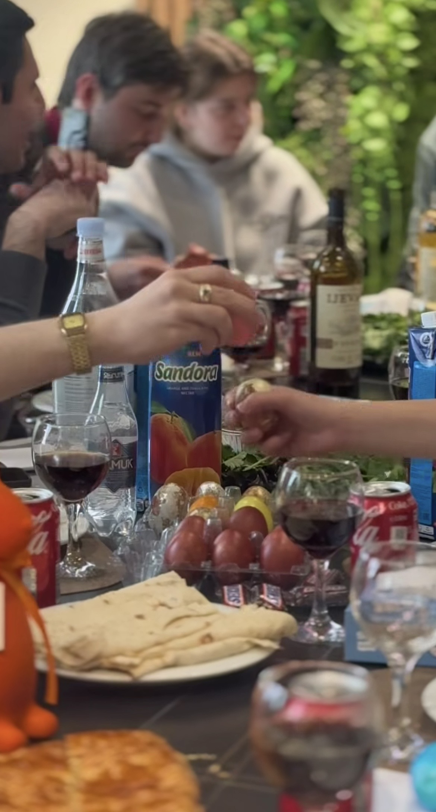
A joint celebration where all four Rotaract Clubs of Armenia gathered together for Easter — a day of fellowship and bonding across clubs.